Extending Personalization
with personalize.module plug-ins.
Presented by Kat Bailey / @katherinebailey
and
Dave Ingram / @daveaingram
Look around you
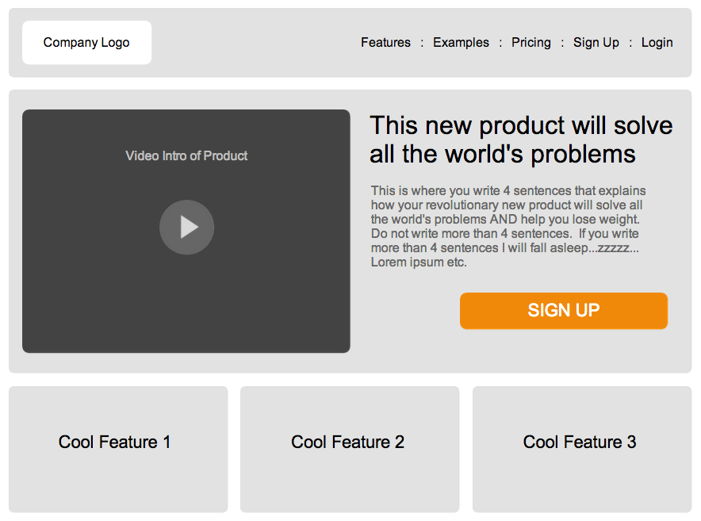
Visitor Context
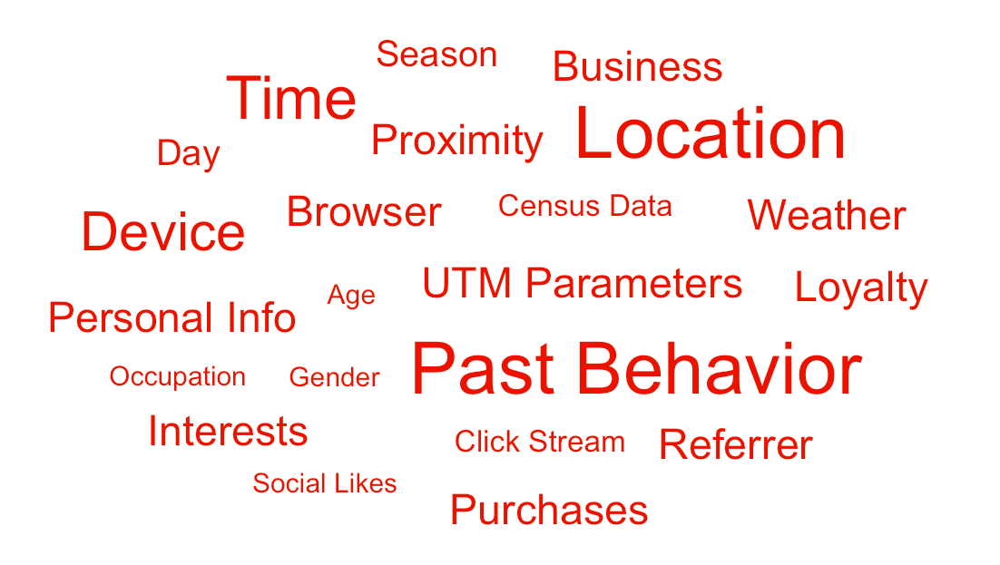
What now!?
Personalize!
Say wah?
Types of personalization:
- Testing (A/B, MVT, MAB, etc..)
- Content recommendations
- Rules based targeting
- Magic
Smart Websites:
Content based on context
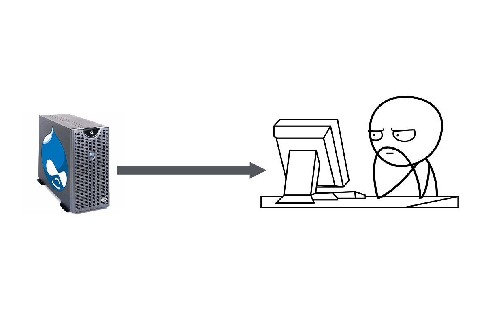
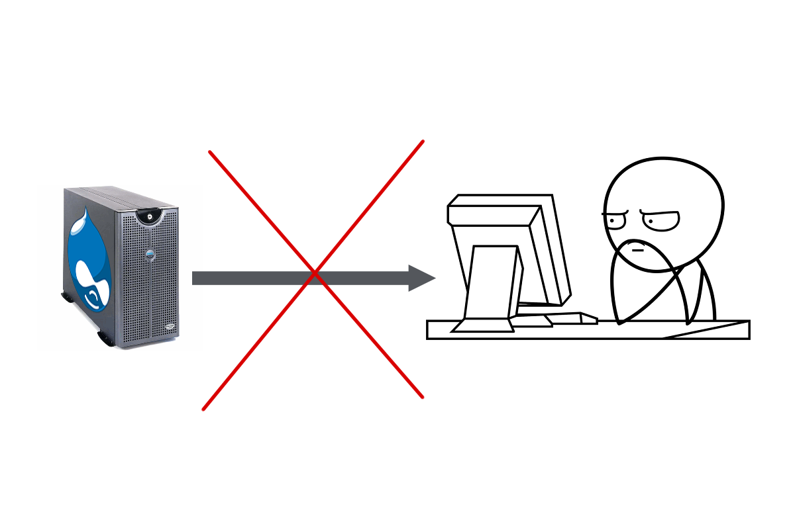
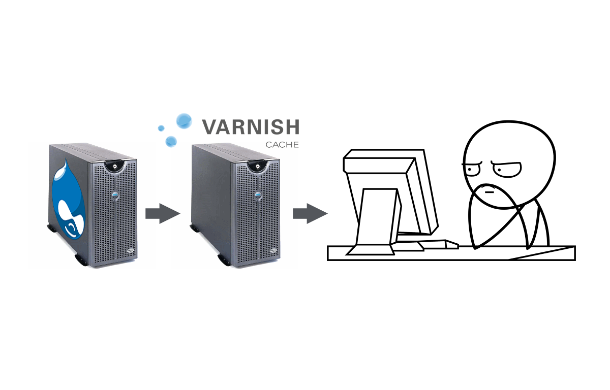
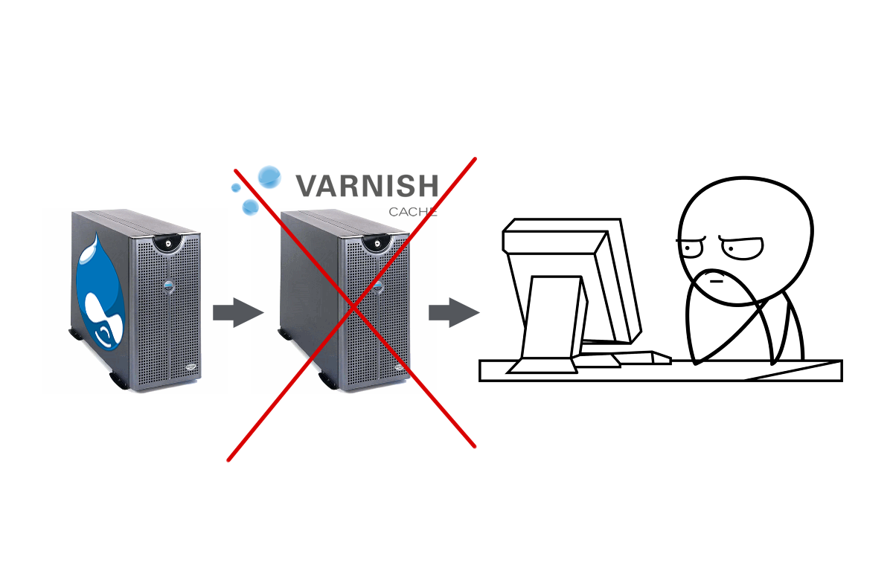
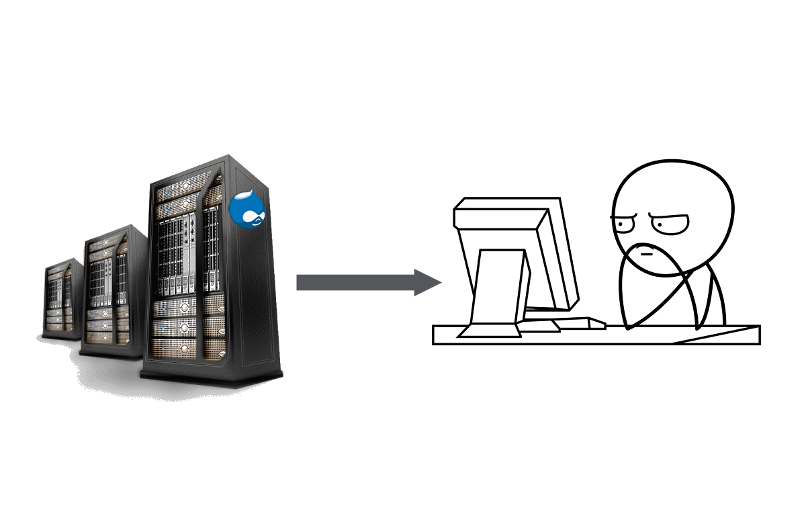
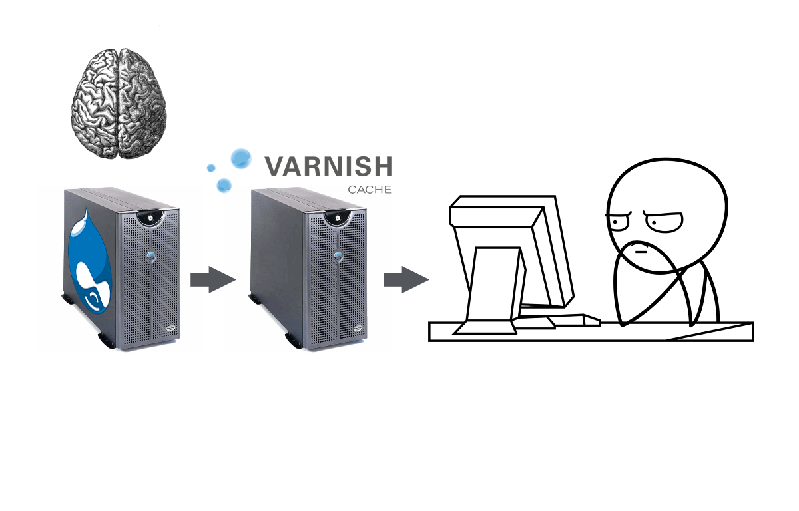

Super quick demo time!
Components of the personalization framework
Agents

Visitor Context
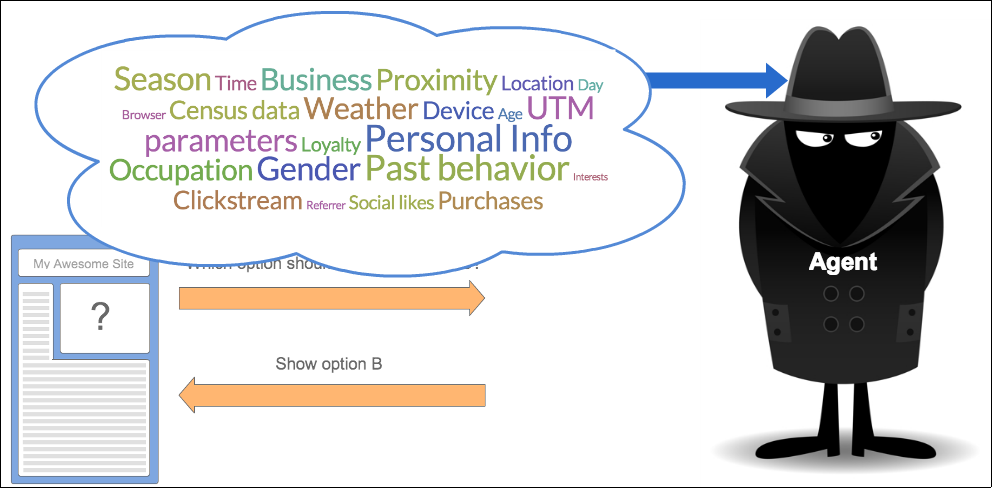Option Sets
Sets of different...
- values in a multi-value field
- blocks
- blobs of html to replace the contents of some selector
- panel panes?
Executors
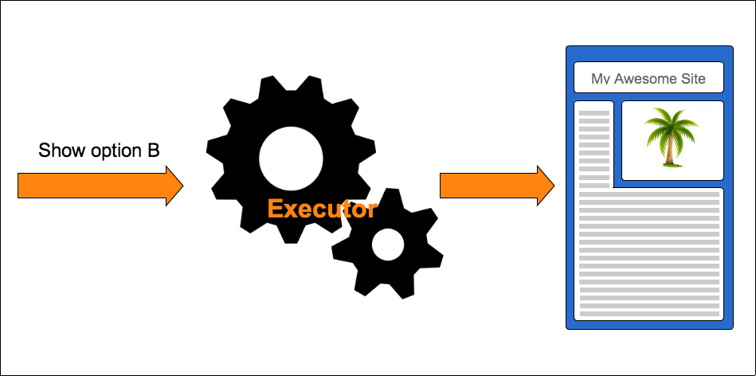Goals (Visitor Actions)
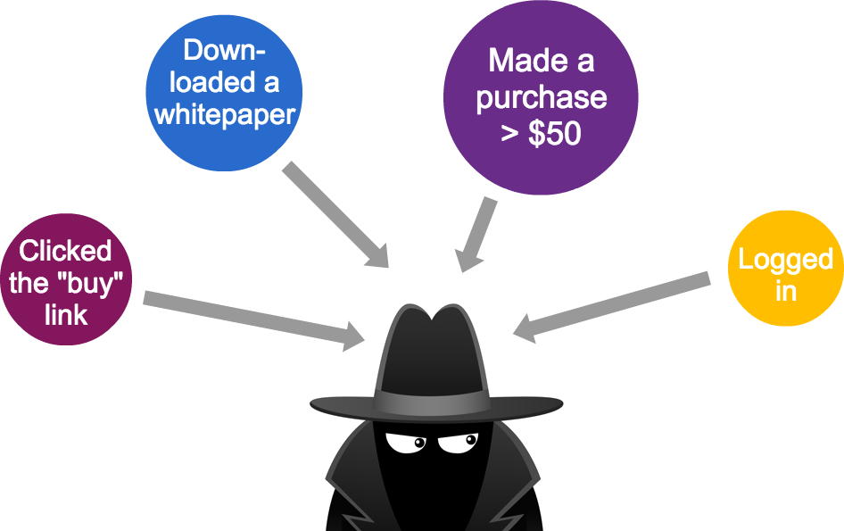How can you extend this?
Agent type plugins
Existing Agent Type plugins
- Personalize Target
- Acquia Lift
What type of agent will *you* create?

GA Experiments
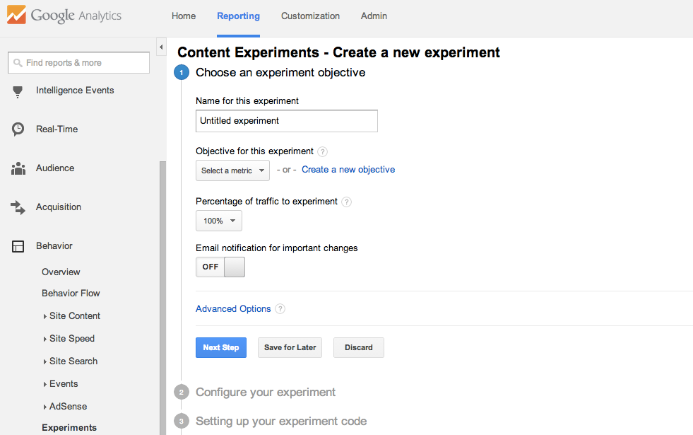Components of an Agent Type plugin
- PHP Class implementing an interface
- JavaScript code for the actual decision
Configuration Form
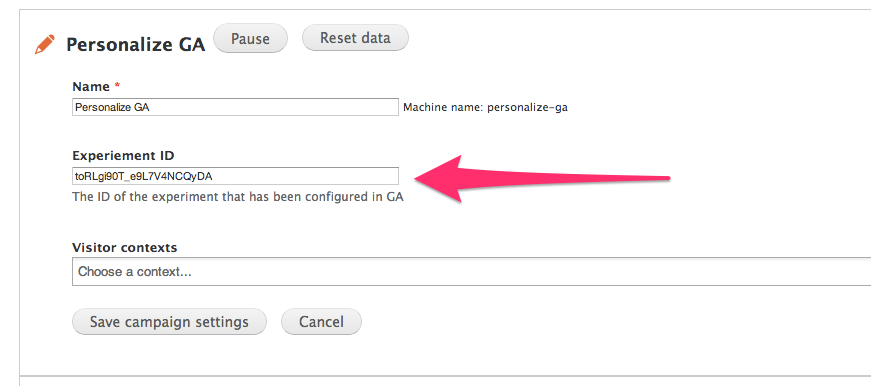Static method to define form elements for configuration
public static function optionsForm($agent_data) {
$form = array();
// @todo For now we only support pre-configured GA experiments but we should
// support creating them from the Drupal side via the Management API.
$form['ga_experiment'] = array(
'#type' => 'textfield',
'#title' => t('Experiement ID'),
'#default_value' => isset($agent_data->data['ga_experiment']) ? $agent_data->data['ga_experiment'] : '',
'#description' => t('The ID of the experiment that has been configured in GA'),
);
return $form;
}
Method to load the JS for the agent
public function getAssets() {
$cx_script = 'http://www.google-analytics.com/cx/api.js?experiment=' . $this->data['ga_experiment'];
return array(
'js' => array(
$cx_script => array('type' => 'external'),
drupal_get_path('module', 'personalize_ga') . '/personalize_ga.js' => array('type' => 'file', 'scope' => 'footer', 'defer' => TRUE),
)
);
}
JavaScript to get the decision
Drupal.personalize.agents.personalize_ga = {
'getDecisionsForPoint': function(agent_name, visitor_context, choices, decision_point, fallbacks, callback) {
var decisions = {};
for (var j in choices) {
if (choices.hasOwnProperty(j)) {
decisions[j] = choices[j][cxApi.chooseVariation()];
_gaq.push(['_trackEvent', 'Personalize', 'decision', j, variation, true]);
}
}
callback(decisions);
}
};
Facebook's Planout
Planout code snippet (Python)
class MyExperiment(SimpleExperiment):
def assign(self, params, userid):
params.button_color = UniformChoice(choices=['#ff0000', '#00ff00'], unit=userid)
params.button_text = UniformChoice(choices=['I voted', 'I am a voter'], unit=userid)
...
my_exp = MyExperiment(userid=42)
color = my_exp.get('button_color')
text = my_exp.get('button_text')
http://my-awesome-planout-service.com
/get-decision/some-decision-name/option-a,option-b
/send-goal/some-goal/some-value
/get-reports/some-decision-name
Visitor Context Plugins
Existing Visitor Context plugins
- User Profile context (in personalize module)
- Personalize URL Context submodule (for targeting based on querystring parameters).
Components of a Visitor Context plugin
- PHP Class implementing an interface
- JavaScript code to pass the context values to the agent
New plugin example: User roles
Configuration Form
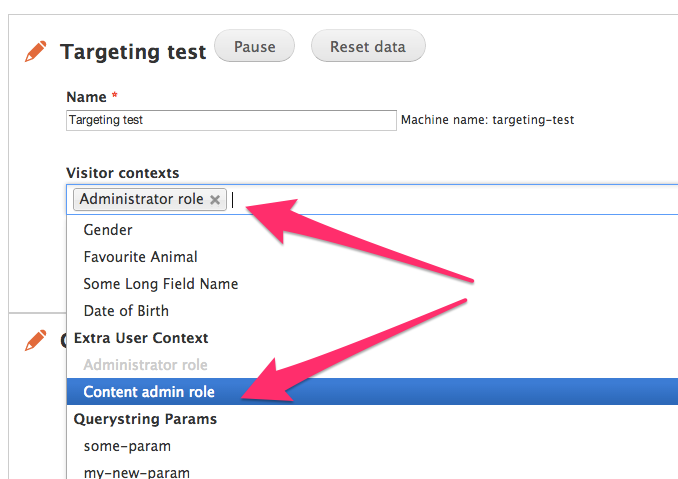Static method to define the context options
public static function getOptions() {
$options = array();
$roles = user_roles();
foreach ($roles as $rid => $role) {
if (in_array($rid, array(DRUPAL_ANONYMOUS_RID, DRUPAL_AUTHENTICATED_RID))) {
continue;
}
$options['role_' . $rid] = array(
'name' => t('@role role', array('@role' => ucfirst($role))),
'group' => 'Extra User Context'
);
}
return $options;
}
Explicit Targeting Config

Method to return possible values
public function getPossibleValues() {
$possible_values = array();
foreach ($this->selectedContext as $name) {
if (!preg_match("/role_(\d+)/", $name, $matches)) {
continue;
}
$role = user_role_load($matches[1]);
$possible_values[$name] = array(
'friendly name' => $role->name,
'values' => array(),
);
foreach (array(0 => t('Does not have'), 1 => t('Has')) as $val => $has_text) {
$possible_values[$name]['values'][$val] = t('@has the @role role', array('@has' => $has_text, '@role' => $role->name));
}
}
return $possible_values;
}
JavaScript to pass the actual values
Drupal.personalize.visitor_context.extra_context = {
'getContext': function(enabled) {
var i, context_values = {};
for (i in enabled) {
if (enabled.hasOwnProperty(i) && Drupal.settings.personalize_extra_context.hasOwnProperty(i)) {
context_values[i] = Drupal.settings.personalize_extra_context[i];
}
}
return context_values;
}
};
Option Set Type Plugins

Existing Option Set type plugins
- Personalize Fields submodule
- Personalize Blocks submodule
- Personalize Elements submodule
More possibilities:
- Panel Variants
- Page Redirects
- Menu Links
- Input Filters
Executors are swappable too!
The "show" executor
Drupal.personalize.executors.show = {
'execute': function ($option_set, choice_name, osid) {
var element = $('script[type="text/template"]', $option_set).get(0);
var json = element.innerText;
var choices = jQuery.parseJSON(json);
var winner = choices[choice_name]['html'];
// Append the selected option.
$option_set.append(winner);
}
};
Goals (Visitor Actions)
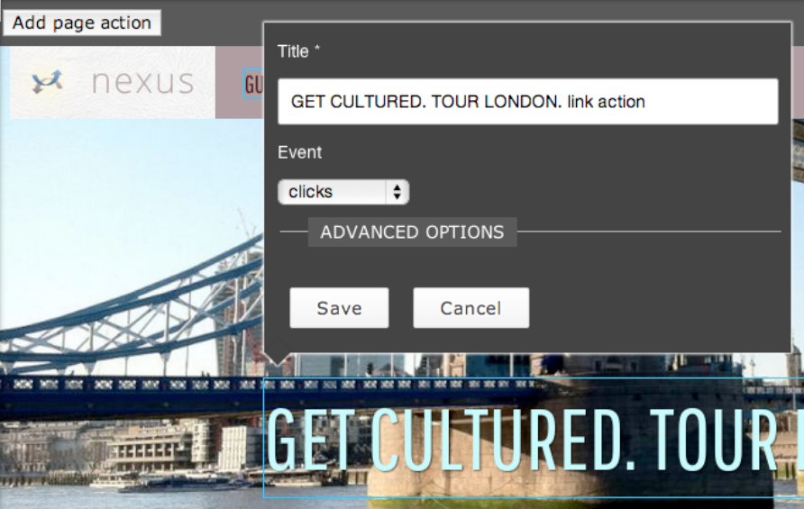Visitor Actions
- Can be defined in code by implementing a hook
- Can be defined via the Rules UI
- You can write an Actionable Element plugin for allowing other types of things (besides links, forms and the entire page) to be actionable via the Visitor Actions UI module